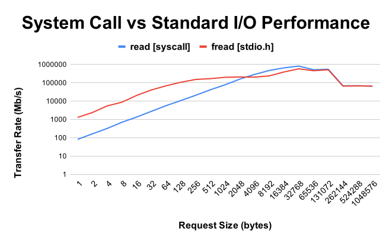

Motivation
Input and output are core tasks of every program, and the standard i/o library is one of the most significant components of the C standard library. The standard i/o library is motivated by two key design goals–portability, and performance.
Portability
Each operating system implements its own file system, with its own interface semantics. The C standard i/o library implements a high-level interface into many common file system operations, which minimizes the need for non-portable, system-specific code, and simplifies many development tasks.
Additionally, system i/o interfaces typically only operate on files as sequences of raw bytes, requiring programs to manually format or interpret data; for example, manually converting numeric values to and from their textual representations. In contrast, the C standard i/o library provides various facilities for easily producing and interpreting formatted data.
While system i/o often provide more precise control and more informative diagnostics, the value of abstracting these details away can greatly decrease the complexity of a program and the incidence of bugs and other programming mistakes.
Performance
A system call is a request that a user-space program makes to the kernel to perform an action on its behalf. This requires the processor to enter a privileged execution state, execute the kernel’s system call handler code, and then exit the privileged execution state. This context switching represents a significant overhead compared to a typical function call.
For example, the getpid() system call simply returns the process id of a running process. Its execution time is approximately 500 times longer than simply calling an equivalent user-space function that returns an arbitrary process id value.
File i/o are privileged operations which are mediated by system calls–primarily read() and write(). The execution time of these operations is approximately independent of the size of a request up to a few kilobytes, so there is a strong motivation for avoiding small data transfers. Additionally, file system access is serialized among multiple processes, mediated by global file system locking. As a result, a process which performs frequent small requests can severely degrade overall system performance, and this type of access pattern should be avoided.
The standard i/o library takes care of this by allocating an internal buffer for each open file. The i/o methods exposed by the stdio library pass through this buffer. When a read operation is performed, data is pulled from the buffer; if the buffer is depleted, it is refilled with a single read() system call. Likewise, when a write operation is performed, data is added to the buffer; when the buffer is filled, its contents are written with a single write() system call.
The following chart demonstrates the transfer rates of the read() (system call) and its equivalent fread() (stdio) method; in almost all situations, fread() outperforms read() by an order of magnitude. Only for relatively large data transfers do the two approach parity.

The standard i/o fread() function is approximately ten times faster than the read() system call for transfers up to approximately 512 bytes, when data transfer begins to dominate request times.
The stdio library exposes a macro, BUFSIZ, which represents the optimal buffer size (in bytes) for maximizing stream transfer efficiency on a given system.